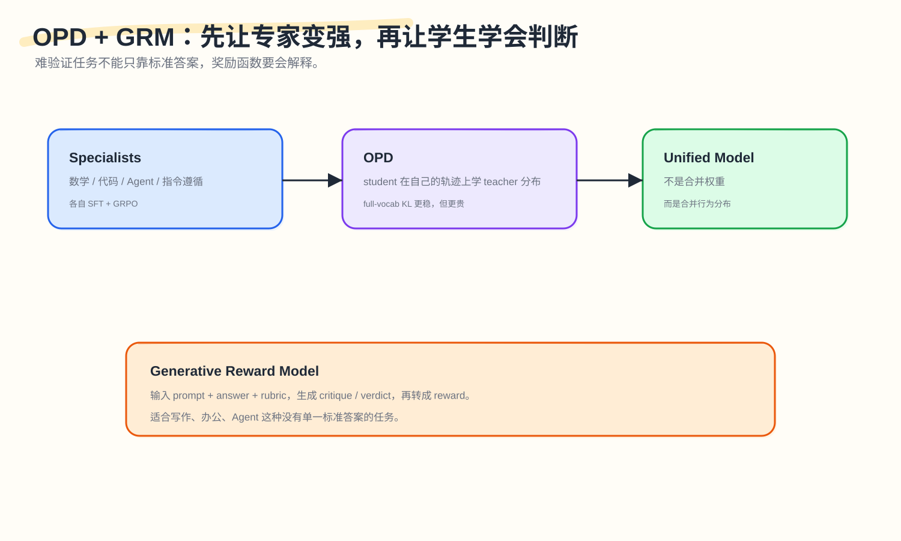
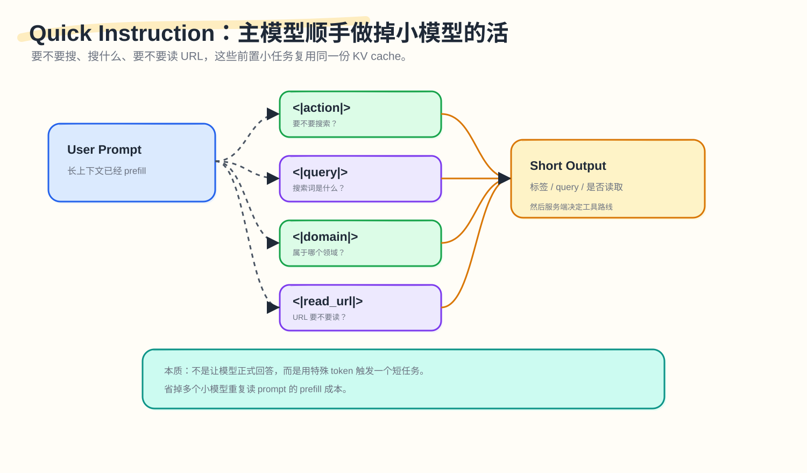
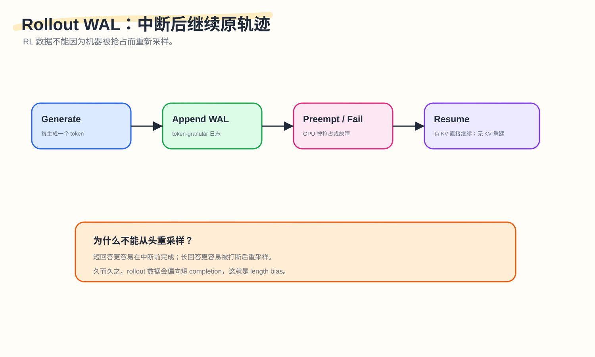

DeepSeek‑V4's Hidden Thread III: From Language Model to Agent Operating System

The first two articles each covered one topic.
The first covered memory: why DeepSeek‑V4 can handle 1M context. It splits history into layers — raw text for recent history, compressed-then-retrieved for mid-range, heavily-compressed-then-scanned for distant.
The second covered control: how something this complex is trained and deployed. TileLang, deterministic kernels, FP4 QAT, Muon-ZeRO, Context Parallelism, KV Cache OS — all aimed at preventing complexity from spinning out of control.
This third article covers action.
Action is different from answering. Answering means the model outputs a block of text. Action means the model enters an environment, calls tools, runs commands, modifies files, fails, recovers, and continues. Once an Agent starts acting, the system problems change: it generates a trajectory, faces a continuously changing environment, and failure isn’t just a wrong answer — it could also be a tool call error, corrupted sandbox state, repeated command execution, or rollout data distribution drift.
So this article’s question is:
How does DeepSeek‑V4 turn a language model into a system capable of long-horizon action?
This can’t be explained by “support for tool calling.” V4 contains at least several layers of design:
- OPD: first train multiple specialists, then distill their capabilities back into a unified model;
- GRM: in hard-to-verify tasks, the reward function doesn’t just score — it must also generate evaluations;
- Quick Instruction: fold front-end small decisions — whether to search, what to search for, whether to read a URL — into the main model;
- Rollout WAL: when an RL rollout is preempted, continue the original trajectory rather than re-sampling from scratch;
- DSec: give the Agent a real, isolated, recoverable, replayable execution environment;
- EROFS / overlaybd / trajectory log: let massive sandboxes start quickly, load on-demand, and remain auditable;
- Real-world tasks: finally verify with actual writing, search, office work, and code agent tasks whether the system can do real work.
Hugging Face’s analysis of V4 also places Agent capabilities at the center: V4’s value lies in making long-horizon agentic workloads more practical; 1M context is just the entry point. It specifically mentions interleaved thinking across tool calls, the |DSML| tool-call format, and DSec, the sandbox platform built for RL rollouts. (Hugging Face)
1. The First Step in Action: Don’t Let One Model Be Pulled in Ten Directions at Once
The most common mistake in post-training is mixing all tasks together for RL.
Math wants long reasoning.
Chat wants brevity.
Code wants strict test execution.
Agent wants willingness to try multi-step approaches.
Writing wants natural style.
Instruction following wants less creativity.
When these goals all pull on one model simultaneously, they easily interfere with each other.
V4’s approach is more like specialized training by subject.
First, train multiple specialist experts. Each specialist does SFT in its own domain, then applies GRPO for RL. The math model trains on math tasks, the code model trains on code tasks, the Agent model trains on tool and environment interaction, the instruction-following model trains on conversation quality.
Then OPD is used to merge these specialists' capabilities back into a unified model.

OPD stands for On-Policy Distillation. The key word is “on-policy”; “distillation” is just the surface description.
Ordinary offline distillation starts from a fixed dataset, has the teacher provide answers or logits, and has the student follow along. OPD inverts this order: the student first generates its own trajectories, teacher experts provide distributions on those trajectories, and the student learns those distributions.
This difference matters more than it appears: the student learns from states it would actually reach, not states in a static dataset. This is especially important for Agents, because Agents have many intermediate states: tool returns, command failures, file changes, environment anomalies. If the model only trains on offline answers, it easily misses the pitfalls it would actually encounter during real action.
V4 also emphasizes full-vocabulary logit distillation. Many distillation approaches approximate KL only over sampled tokens to save resources — cheaper, but with higher gradient variance. V4 chooses the more expensive full-vocab KL because it more stably transfers teacher distribution information to the student. The cost is enormous: multiple teachers, very large vocabularies, long trajectories. If logits were stored directly, memory and storage would overflow. V4’s engineering approach caches only teacher hidden states, rebuilds logits on demand by passing through the teacher prediction head during training, and sorts mini-batches by teacher index so that at most one teacher head resides on the GPU at any moment. (DeepSeek-AI)
V4’s approach doesn’t hard-merge the weights of several models. It has the unified model learn the judgment distributions of multiple experts along its own behavioral trajectories. This is especially critical for Agents, because the distribution differences between experts are themselves something the Agent needs to learn to navigate.
2. GRM: In Hard-to-Verify Tasks, the Reward Function Must Explain Itself
Math and code have one advantage: they can be verified.
Math can compare final answers.
Code can run unit tests.
Wrong answer means low reward; tests pass means high reward.
But Agent and office tasks often aren’t like this.
For example: write a market analysis, plan a research process, locate a hidden bug in a codebase, make a judgment based on multiple web pages. These tasks have no single correct answer. Whether a response is good often depends on multiple criteria: completeness, adherence to user constraints, factual accuracy, format correctness, reasonable tool calls, absence of key risks.
Traditional scalar reward models compress all of this into a single number:
|
|
This number can train, but it’s hard to debug. Why did the model get a high score? Because the facts are correct? Because the tone is good? Because it catered to some preference of the reward model? Hard to tell.
V4 introduces Generative Reward Model. GRM can be understood as “a reward model that writes evaluations.” It reads the prompt, answer, and rubric, then generates a critique/verdict, and converts the verdict into the reward that RL needs. The paper also explains that for hard-to-verify tasks, V4 uses rubric-guided RL data and lets the actor network itself serve as the GRM, optimizing both generation and evaluation capabilities together. (DeepSeek-AI)
A simple example:
|
|
This is easier to debug than a black-box score. It also suits Agents better, because an Agent’s output isn’t just the final answer — it includes intermediate actions: what was searched, what was run, why the file was modified, how failure was recovered from.
GRM also has risks. If the actor serves as its own judge, it may self-reinforce. The model might learn to satisfy the surface form of the rubric rather than genuinely improve. This requires human annotation, blind evaluation, independent validation sets, and reward version control for calibration.
When tasks have no standard answer, the reward can’t just score — it should ideally also explain why. That’s exactly the problem GRM addresses.
3. Quick Instruction: Fold Front-End Small Decisions into the Main Model
Real chat systems often need to make many small judgments before formally answering: should we search the web? What’s the search query? Does it need authoritative sources? Which domain does it belong to? Did the user paste a URL to read? What should the conversation be titled?
The traditional approach might call additional small models or classifiers. The problem: small models must re-read the prompt. For long contexts, repeated prefill is expensive.
V4’s Quick Instruction uses special tokens to trigger these internal tasks. For example:
|
|

The main model has already read the context — don’t let multiple small models each read it again. Instead, give the main model a task card and have it output short results.
This isn’t the same as tool calling. Quick Instruction is more like routing/gating before tool calls: first decide whether to search, then generate a query, then decide which URLs to read, and only then enter the formal answer or tool call.
V4 also introduces the |DSML| special token and an XML-style tool call format. Hugging Face’s analysis also notes that V4’s tool call format uses dedicated tokens and an XML-based schema, reducing escaping failures in JSON-in-string tool calls. (Hugging Face)
Agent systems have many small decisions, and these small decisions aren’t worth re-prefilling a small model each time — Quick Instruction folds this cost into one forward pass of the main model. But small decisions are just the beginning of the Agent’s reasoning chain; once the model generates a complete RL rollout trajectory, the integrity of that trajectory also needs to be guaranteed.
4. Rollout WAL: Continue the Original Trajectory After Interruption
RL rollouts produce training data, not ordinary chat.
The model generates a trajectory for a prompt. Then a reward model, teacher, verifier, or environment provides feedback. This trajectory will be used to train the model.
Large-scale rollouts run on GPU clusters. Tasks may be preempted by preemptive schedulers, and hardware may fail. The brute-force approach: if it fails, regenerate from scratch.
V4’s paper points out this is mathematically wrong because it introduces length bias. (DeepSeek-AI)
Why?
Suppose there are three responses with lengths of 20 tokens, 200 tokens, and 2000 tokens respectively. If machines frequently interrupt, short responses easily complete before interruption, while long responses are more likely to be cut in half. If interrupted responses are re-sampled from scratch, long responses end up being re-sampled multiple times. Re-sampling may produce shorter versions or premature endings. Over time, the data becomes biased toward short completions.
So V4 does token-granular WAL.
Every generated token writes a log entry. On a normal preemption, the system saves the KV cache of unfinished requests. On recovery, the WAL and KV cache are used to continue decoding from the interruption point. If it’s a fatal hardware error and the KV cache can’t be saved in time, the tokens in the WAL can be used to re-prefill, rebuild the KV cache, and then continue decoding.

This is very similar to Write-Ahead Log in databases. In databases, the WAL principle is to write changes to the log before modifying the main state; after a crash, the log can be replayed to recover. In LLM rollouts, the log object changes from “database updates” to “already generated tokens.” (WAL)
It’s like a writing app that auto-saves every character — after a power outage, you don’t have to rewrite the whole essay, you open the document and continue from the last character. Training interruptions should not change the sampling distribution; this matters more than saving compute. Saving compute is an engineering benefit; avoiding length bias is statistical correctness.
WAL ensures trajectory integrity. The next question is: where is this trajectory executed?
5. DSec: Agents Need a Real, Isolated, Recoverable Environment
An Agent that can act can’t just “pretend to operate tools” in text. It has to actually run commands, change files, install dependencies, execute tests.
This requires a sandbox.
An ordinary sandbox just needs to execute code. A sandbox for Agent training is more complex: it needs safe isolation (the model may run untrusted code), fast startup (RL will create massive numbers of environments), high-density concurrency support, recoverability (training tasks will be preempted), and replayability (failed trajectories need debugging).
V4’s DSec — DeepSeek Elastic Compute — is built for exactly this.

The paper says DSec consists of three Rust components: Apiserver (API gateway), Edge (agent on each host), and Watcher (cluster monitor). Upward, it exposes interfaces via a unified Python SDK libdsec; downward, it supports four execution substrates: Function Call, Container, microVM, and fullVM.
Function Call is for lightweight stateless tool calls.
Container is for most code tasks.
microVM is based on Firecracker, for stronger isolation of untrusted code.
fullVM is based on QEMU, for tasks requiring a complete OS.
Firecracker is a lightweight virtualization technology open-sourced by AWS, based on Linux KVM, aiming to combine the speed and resource efficiency of containers with the security isolation of traditional VMs. AWS’s official introduction notes that Firecracker reduces startup time and memory footprint through minimal device emulation while providing a trusted sandbox environment for each container. (Firecracker)
This maps exactly onto Agent sandbox requirements: the code the model generates is untrusted, but the number of tasks is enormous, so heavy VMs can’t be used every time.
Agent training isn’t about language output — it’s about model behavior in real environments. This means the training infrastructure must also be able to truly execute: run commands, change state, withstand failure.
6. EROFS / overlaybd: Environments Can’t Download Completely Every Time
Agent sandboxes have another very practical problem: images are large, and there are many environments.
Code tasks may need various dependency environments: Ubuntu + Python, Node + pnpm, Rust toolchain, CUDA libraries, benchmark repos, browser environments, databases. If every sandbox startup requires fully downloading and unpacking an image, RL rollouts will be throttled by environment startup time.
V4’s DSec uses layered, on-demand loading.
For containers, it turns base images and filesystem commits into 3FS-backed readonly EROFS layers, mounted into overlay lowerdirs. At mount time, metadata is locally visible; actual data blocks are pulled from 3FS on demand. (DeepSeek-AI)
EROFS is Linux’s Enhanced Read-Only File System. The Linux kernel documentation says it is a general-purpose read-only filesystem solution, emphasizing simplicity, random-access friendliness, and high performance, supporting compact layout, transparent file compression, and direct access — particularly suited for memory-constrained devices and high-density hosts with numerous containers. (EROFS)

For microVMs, DSec uses overlaybd. Overlaybd is a block-level layered image format providing a virtual block device view composed of multiple block-based layers for containers, secure containers, and VMs, and is one of the open-source implementations from the DADI paper. (overlaybd)
Container side: on-demand fetching — first present the complete directory tree, then pull corresponding data blocks from 3FS only when actually reading a file. microVM side: base layers are shared, writes go into a local copy-on-write layer. The goal is practical: save startup time, storage bandwidth, and memory usage — nothing elegant about it.
7. trajectory log: Don’t Re-execute Already-Executed Commands
Another key point of DSec is the trajectory log.
An Agent executing tasks in a sandbox might do these things:
|
|
Some of these commands aren’t idempotent — rm -rf tmp, git commit, pip install, writing to databases, calling external services, modifying files. Re-running them changes state or produces different results. After a training task is preempted and recovers, you can’t simply re-execute all commands from the beginning.
So DSec maintains a globally ordered trajectory log for each sandbox, recording each command invocation and its result. On recovery, already-executed commands can be fast-forwarded, directly returning the logged results; only commands not yet executed continue with real execution. The paper says the trajectory log supports client fast-forwarding, fine-grained provenance, and deterministic replay. (DeepSeek-AI)
This is the same idea as rollout WAL, just with different objects:
| System | Logged object | Purpose |
|---|---|---|
| Rollout WAL | Each generated token | Continue original sampling trajectory after interruption |
| DSec trajectory log | Each command and result | Avoid re-running non-idempotent operations after recovery |
So in Agent systems, trajectory is the most important state; the final answer is just one slice of the trajectory.
8. When Sandbox Scale Grows: Infrastructure Itself Becomes the Bottleneck
The paper says: DSec does memory reclamation and duplicate page-cache footprint mitigation to support safe overcommitment; DSec also mitigates container runtime spinlock contention to improve per-host packing density.
First, page cache.
Many sandboxes will use the same base image. Ideally, the same read-only image content should be shared. In the worst case, every container/microVM caches a copy, the guest OS caches one, and the host block backend caches another. When sandbox numbers grow large, this wastes enormous amounts of memory.
EROFS shared read-only layers, overlaybd’s shared base layer, and on-demand loading all help reduce duplicate caching. The Linux EROFS documentation explicitly mentions it’s suitable for high-density hosts with numerous containers and provides compact layout, compression, and direct access design. (EROFS)
The goal of memory reclamation is: under safe overcommit, reclaim memory that can be dropped, re-read, or rebuilt — such as cold cached pages of read-only images, cold pages of idle sandboxes — rather than arbitrarily reclaiming anonymous memory that would break task state.
Now, spinlock contention.
When hundreds of thousands of sandboxes start, destroy, and execute commands concurrently, some global locks or hot paths in general container runtimes can become CPU bottlenecks. Many threads can’t acquire locks and spin-wait on spinlocks, with CPU spent waiting for locks rather than executing tasks.
Reasonable directions typically include: warm pools (Function Call uses pre-warmed container pools), state sharding (reduce global locks), batched/async lifecycle (reduce frequency of entering critical sections simultaneously), per-host Edge taking over hot paths (reduce repeated calls to general runtime), pre-mounted/cached image layers (reduce mount and metadata operations at startup).
When sandbox count grows from hundreds to hundreds of thousands, Docker/runtime itself becomes a system bottleneck — no different in nature from the problems any system encounters when scaling up.
9. Real-world tasks: In the End, the Question Is Whether It Can Do Real Work
The real-world tasks section of the V4 paper is worth reading carefully, because it doesn’t just report standard benchmarks — it also evaluates tasks closer to real product scenarios: Chinese writing, Search, White-Collar Tasks, and Code Agent.
Hugging Face’s V4 analysis also says V4’s benchmark numbers are competitive but not absolute SOTA; the real innovation lies in its design targeting efficient long-context and agentic tasks. (Hugging Face)
9.1 Search: The Difference Between RAG and Agentic Search
DeepSeek web/app’s non-think mode uses RAG; thinking mode uses agentic search. In internal evaluations, Agentic Search’s overall win rate over RAG is 61.7% vs 18.3%, with 20.0% tie. But it’s also more expensive: an average of 16.2 tool calls, 13,649 prefill tokens, 1,526 output tokens. (DeepSeek-AI)
This states something very plain: Agentic Search is stronger, but not free. So the system must decide when to use it. Quick Instruction’s front-end small decisions are part of this larger problem.
9.2 Code Agent: Not Just Being Able to Write Code, But Being Able to Fix Code in Environments
V4’s Code Agent evaluation comes from real R&D tasks provided by internal engineers, covering feature development, bug fixing, refactoring, and diagnostics, with tech stacks including PyTorch, CUDA, Rust, and C++. After rigorous screening, 30 tasks were formed. V4-Pro-Max pass rate is 67%, higher than Claude Sonnet 4.5’s 47%, close to Claude Opus 4.5’s 70%, but lower than Opus 4.6 Thinking’s 80%. (DeepSeek-AI)
The significance of this result isn’t “V4 is already the best.” It shows that V4’s system design has indeed cashed out some value on real code tasks.
Because code Agent capability isn’t determined only by model output — it’s also determined by the environment system: can the sandbox start quickly, can tests be run, can interruptions be recovered from, can trajectories be logged, can non-idempotent environment changes be avoided, can the tool history be preserved in long contexts.
9.3 White-Collar Tasks and Chinese Writing
Office tasks and Chinese writing seem further from the sandbox, but they reflect the same direction: the model isn’t just answering questions, it’s delivering outputs. The paper’s white-collar task evaluation includes dimensions like Task Completion, Instruction Following, Content Quality, and Formatting Aesthetics. Chinese writing distinguishes between functional writing and creative writing. (DeepSeek-AI)
These tasks are hard to evaluate with a single correct answer, which also explains why GRM and rubric-guided RL data matter.
10. Viewing the Action System as a Whole
Now the structure of this third article can be compressed into a table:
| Problem | If left unaddressed, what breaks | V4’s handling |
|---|---|---|
| Multi-capability interference | mixed RL objectives conflict | specialist training + OPD |
| Hard-to-verify tasks have no standard answer | scalar reward is hard to explain | GRM + rubric-guided RL |
| Too many front-end small decisions | small models repeatedly prefill | Quick Instruction |
| rollout is preempted | re-sampling from scratch causes length bias | token-granular WAL + KV restore |
| Agent needs a real environment | pretending to call tools in text | DSec sandbox |
| Sandbox startup is slow | rollout waits for image download | 3FS + EROFS / overlaybd on-demand loading |
| Commands re-run after recovery | non-idempotent operations corrupt state | trajectory log + fast-forward |
| Too many sandboxes | page cache / runtime locks become bottlenecks | memory reclamation + runtime contention mitigation |
The common thread here: they all protect “trajectory.”
OPD lets the student learn from experts along its own trajectories.
GRM evaluates response or action trajectories.
Rollout WAL preserves the token trajectory.
DSec trajectory log preserves the command trajectory.
Interleaved thinking preserves the reasoning history during tool calls.
Real-world tasks ultimately evaluate whether the model can complete tasks in real workflows.
So the keyword of this article is action, but more precisely, it’s trajectory management.
11. Boundaries of This Action System
Again, we can’t only cover the strengths.
11.1 OPD Is Expensive
Full-vocab KL, multiple teachers, long trajectories — all resource-intensive. V4 uses hidden state caching and teacher scheduling to reduce costs, but this remains a heavy-infrastructure approach.
11.2 GRM Can Self-Reinforce
The actor serving as its own GRM can improve sample efficiency but may also introduce judge bias. This requires human annotation, blind evaluation, independent validation sets, and reward version management for calibration.
11.3 Quick Instruction Depends on Model Short-Output Stability
If <|action|> misclassifies a query as not needing search, the subsequent answer may be outdated. If <|read_url|> judges incorrectly, the system may miss a key URL. Server-side cannot fully delegate safety and correctness to model short outputs.
11.4 WAL and trajectory log Bring Write Amplification
Writing WAL for every token, logging every command — both carry storage costs. The system must decide on log granularity, compression, retention time, and hot/cold tiering.
11.5 Sandbox Security Isn’t Just About microVM
Firecracker provides stronger isolation, but real environments also require managing network, filesystem permissions, secrets, external service access, resource limits, and cleanup policies. For Agents executing untrusted code, security boundaries must be multi-layered by design.
11.6 Real-world Task Evaluation Still Has Subjectivity
Writing, office work, and agent tasks are more realistic than standard benchmarks but also harder to make fully objective. Rubric quality, reviewer consistency, and task selection all affect conclusions.
These boundaries say that an Agent operating system is a set of trade-offs among reliability, security, evaluability, and cost — no single module is sufficient to represent it.
12. Conclusion: The Core Object of an Agent Is the Trajectory
Reading all three articles together, DeepSeek‑V4’s main thread becomes clear.
The first article covered memory: the key to long context lies in how history is layered for storage and retrieval; window size is just the entry point.
The second article covered control: the key to complex structure lies in whether training, inference, low-precision, reproducibility, and caching remain controllable; the number of modules is secondary.
The third article covers action: the key to Agent capability lies in whether every action trajectory can be generated, evaluated, restored, replayed, and audited; whether tool calls can be output is just the baseline threshold.
V4’s most “operating system”-like aspect is right here.
An operating system doesn’t just compute. It also handles processes, memory, files, recovery, isolation, logs, and security boundaries. V4’s Agent system is similar: OPD/GRM decides how the model learns to act and evaluate actions; Quick Instruction decides when and where to act; Rollout WAL ensures generated trajectories aren’t distorted after interruption; DSec provides a real, isolated action environment; EROFS/overlaybd makes environments appear quickly; trajectory log makes environment interactions recoverable and replayable; real-world tasks verify whether all of this translates into working capability.
So this third article can close with one sentence:
DeepSeek‑V4’s action system treats every step of an Agent as a trajectory that needs to be saved, restored, evaluated, and audited. Adding a tool-call format to a model is two levels below what this accomplishes.
This is also the conclusion of the entire series.
DeepSeek‑V4’s real change isn’t just that the model answers better — it’s that the system begins to be designed around the lifecycle of long-horizon Agents. Memory solves how to handle long history, control solves how to train and deploy complex structures, and action solves how to continuously try and fail in real environments while preserving trajectories. Together, these three things make something that resembles a machine rewritten for the Agent era.
Further Reading
- Hugging Face, DeepSeek‑V4: a million-token context that agents can actually use, 2026. (Hugging Face)
- DeepSeek-AI, DeepSeek‑V4: Towards Highly Efficient Million‑Token Context Intelligence, technical report, 2026. (DeepSeek-AI)
- Martin Kleppmann, Designing Data-Intensive Applications; PostgreSQL documentation, Write-Ahead Logging. (WAL)
- AWS, Introducing Firecracker, 2018. (Firecracker)
- Linux Kernel documentation, EROFS - Enhanced Read-Only File System. (EROFS)
- containerd/overlaybd, Overlaybd: a block based remote image format. (overlaybd)